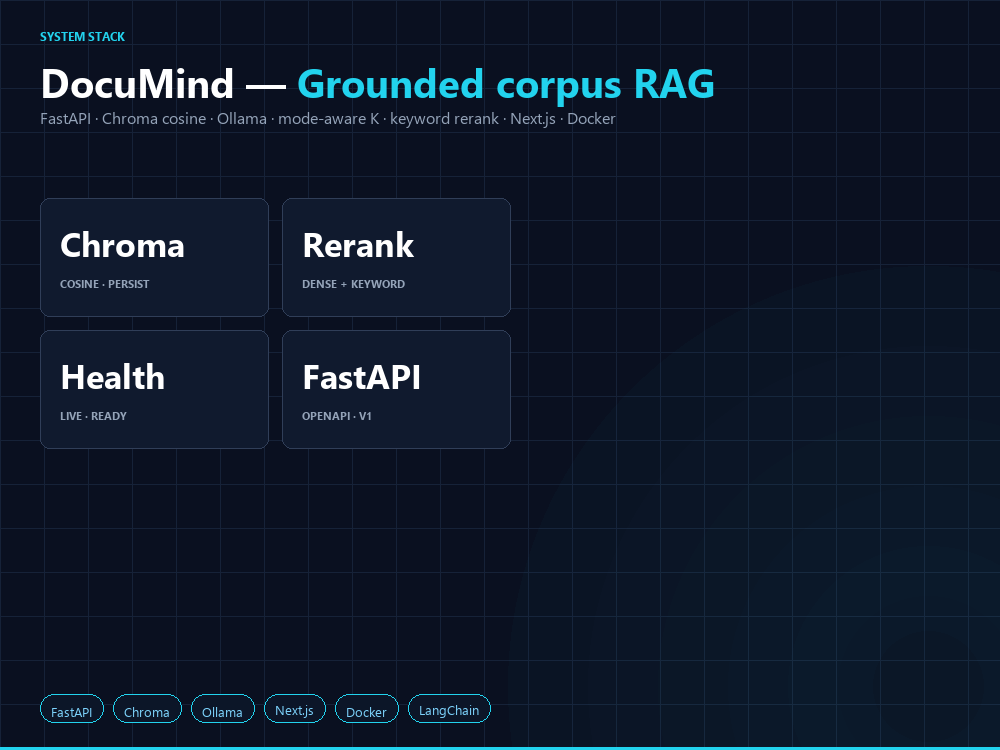

DocuMind
Single-page brief for recruiters and marketplace attachments. Export PDF from Chrome or Edge (Ctrl+P → Save as PDF). Paste sections into proposals as needed. Fill bracketed placeholders before sending.

python scripts/catalog_thumb_art.py --out portfolio/screenshots/documind-upwork-catalog-1000x750.png. Full dashboard capture for interviews: screenshots/documind-dashboard.png (Playwright; default 1680×3200 viewport).One-line pitch
FastAPI service: ingest PDF/DOCX/TXT (optional arXiv pull), LangChain-style chunking into Chroma with cosine distance, query modes that change retrieval budget and prompts, keyword-weighted rerank, optional FLARE-inspired follow-up retrieval, citations with chunk metadata. Ollama for embed + chat; Next.js dashboard; pytest on routers; /health/live vs /health/ready.
What you ship in this shape
- Grounded answers with source cards (title, section, chunk, distance).
- Modes: general Q&A, compare, methodology, dataset map, reproducibility checklist.
- Ops:
/health/live,/health/ready,X-Request-ID, optionalAPI_KEYon/api/v1, CORS allowlist, gzip, security headers, optional JSON logs. - Solid API behavior: 404 on empty delete, arXiv errors mapped to sensible status codes, validated section filters.
- Next.js UI: status line, paper/chunk counts, preset long prompts, query form, synthesis + expandable sources.
Compared with typical “RAG demo” repos
Many public examples stop at a single chain, one UI page, and a hosted model. Common stack: LangChain/LlamaIndex + managed vectors + OpenAI. DocuMind keeps an explicit HTTP contract, local inference as the default path, readiness vs liveness health split, pytest coverage on routers, and Docker notes in the README.
| Crowded pattern | Typical portfolio signal | DocuMind signal |
|---|---|---|
| Chat-with-PDF repos (many GitHub “RAG-PDF” / ChatPDF variants) | Single chain, one UI page, cloud keys assumed. | REST contract, optional local Ollama path for zero recurring inference cost in demos, bulk paths (directory ingest, arXiv list). |
| Notebook or Colab-only deliverable | Works on author machine; unclear production boundary. | FastAPI lifespan wiring, pytest, Docker story in README; dashboard screenshot under portfolio/screenshots/ for attachments. |
| Generic “citations enabled” | Sources sometimes irrelevant or from one doc only. | Cross-paper diversity + rerank language; multiple task-shaped prompts (compare, methodology, datasets, reproduce). |
Health check = 200 OK on root |
Orchestrator cannot tell if embeddings are actually usable. | /health/live vs /health/ready split; aligns with how you answer infra interview questions, not only demo questions. |
/health/ready on their VM, or a fixed ingest count), then attach one screenshot and one milestone table from Upwork_Project_Catalog_Client.html.
Tech keywords
Python, FastAPI, Pydantic v2, Uvicorn, ChromaDB, LangChain, Ollama, httpx, Next.js 15, React, TypeScript, Docker, pytest.
Sample project titles
- Fixed price: MVP RAG over your PDFs (FastAPI + vector DB + grounded UI).
- Hourly: RAG architecture, evaluation, deployment on your stack.
- Migration: swap local Ollama for OpenAI or Azure OpenAI behind the same retrieval layer.
Pricing anchors (edit for your profile)
| Offering | Scope | USD anchor |
|---|---|---|
| Hourly | Integration, reviews, debugging | [ $95 - $150 / hr ] |
| Fixed - Discovery | Architecture note, backlog, risks; 1-2 weeks | [ $2,500 - $6,000 ] |
| Fixed - MVP RAG | Ingest, index, UI, one-cloud deploy, smoke tests | [ $6,000 - $14,000 ] |
| Fixed - Hardening | Auth, rate limits, tenant isolation, formal eval | [ TBD after scope ] |
Anchors vary by market and your reviews. Use milestones with written acceptance criteria.
Five-minute demo
- Boot API + UI (README:
start_documind.ps1on Windows or Docker Compose; first full corpus ingest can take a long time — use-MaxApiWaitMinuteson Windows). - Open the dashboard at
http://127.0.0.1:3002; load Baseline: evidence-first summary (or another operator card), then Run query; expand Sources. - Open
/docsand contrast/health/livevs/health/ready. - Mention optional
API_KEY, CORS allowlist, and gzip for staging handoff.
Companion artifact
Fixed-price milestone template (same folder): Upwork_Project_Catalog_Client.html — adapt milestones and price to each client.
Your links
- Repository: https://github.com/cdtalley/DocuMind
- Live demo: Screen share on request (local stack), or add your public staging URL here when you have one.
- Upwork profile: [ replace with your profile URL ]